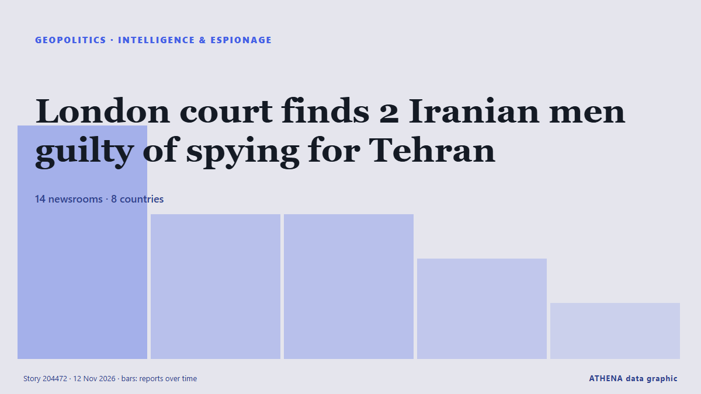

Renseignement et espionnage
SponsoriséPrésenté par  Cybernetics and Artificial Intelligence Lab Welcome to the Cybernetics and Artificial Intelligence Laboratory, established at the Department of Business Administration of the National and Kapodistrian University of Athens. The lab is headed by Professor Dimitrios Thomakos. The lab aims to do research that can be published in top venues. Our research uses tools and methods of Artificial Intelligence, and lies in the following areas: - Forecasting - Decision making - Cyber security - Finance We are always looking forward to collaborating with exceptional students!
Cybernetics and Artificial Intelligence Lab Welcome to the Cybernetics and Artificial Intelligence Laboratory, established at the Department of Business Administration of the National and Kapodistrian University of Athens. The lab is headed by Professor Dimitrios Thomakos. The lab aims to do research that can be published in top venues. Our research uses tools and methods of Artificial Intelligence, and lies in the following areas: - Forecasting - Decision making - Cyber security - Finance We are always looking forward to collaborating with exceptional students!
| 30 oct. | 0 |
|---|---|
| 31 oct. | 0 |
| 1 nov. | 0 |
| 2 nov. | 0 |
| 3 nov. | 0 |
| 4 nov. | 0 |
| 5 nov. | 0 |
| 6 nov. | 0 |
| 7 nov. | 0 |
| 8 nov. | 0 |
| 9 nov. | 2 |
| 10 nov. | 5 |
| 11 nov. | 6 |
| 12 nov. | 3 |
Les titres sont affichés en anglais, tels que publiés.

London court finds 2 Iranian men guilty of spying for Tehran
Two Iranian men have been found guilty of spying on journalists in London for Tehran. de ABC News (International)
Austria advances law change to crack down on espionage
Austria is planning to enhance its espionage laws with tougher penalties for spying offenses, including jail sentences up to 10 years. de Arab News
US soldier arrested for Russia spying: What we know
A US Army member has been arrested by UK police under the National Security Act for allegedly assisting Russia. de Arab News
Romanian intelligence agency says it identified Russian-linked cyber attack
BUCHAREST, Nov 11 - A hacking group linked to Russia's FSB security service staged a cyberattack on a Romanian government organisation last year, the country's intelligence agency said on Wednesday. de The Straits Times
Former CIA officer says US companies are underestimating China intelligence risks
Former CIA officer Michele Rigby Assad says Nvidia's case shows why tech companies must train workers to spot foreign intelligence risks. de Business Insider
Indonesia considers bug sweeps, tighter controls on spy tools after wiretap scandal
The scandal resulted in the arrest of four senior police officers accused of illegal phone surveillance, including Prabowo Subianto's newly appointed chief of staff. de Free Malaysia Today
House Democrats to investigate Trump's handling of US spy agencies
House Democrats plan to investigate former President Donald Trump’s management of US spy agencies following their takeover of key committees next year. de Arab News
Victorian newsagent’s unexpected connection to alleged international spy scandal
An affair has thrust Nvidia and Chinese tech company MegaSpeed into the spotlight, but there’s an odd Aussie connection to the global story. de The Age
‘Like gods reigning over humans’: Many defectors see daughter of North Korea's Kim as heir apparent
North Korea’s leader Kim Jong Un’s daughter, Kim Ju Ae, is seen by some defectors and experts as a likely heir despite the country’s male-dominated culture. de Arab News
Poland arrests two Ukrainians suspected of spying and sabotage for Russia
Two Ukrainian citizens, ages 24 and 25, have been arrested in Poland on suspicion of espionage and sabotage on behalf of Russian intelligence services, said Tomasz Siemoniak, the Polish minister who… de Meduza (English)
Trump says FBI investigating Nvidia boss's affair with alleged Chinese spy
US President Donald Trump has said the FBI is investigating the affair between the chief executive of Nvidia and an alleged Chinese spy. de MyJoyOnline